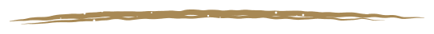
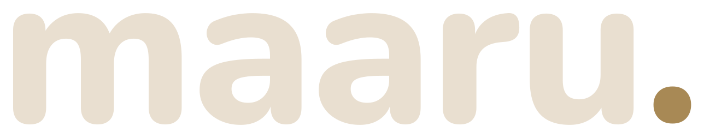
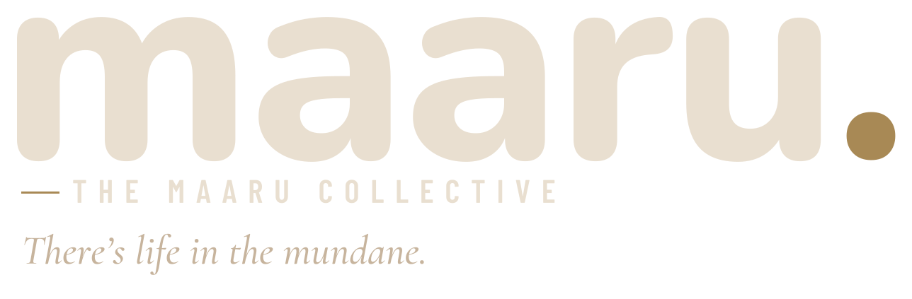
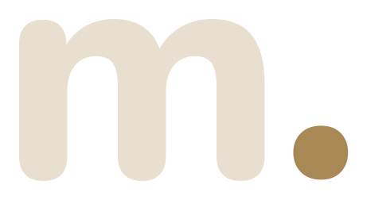
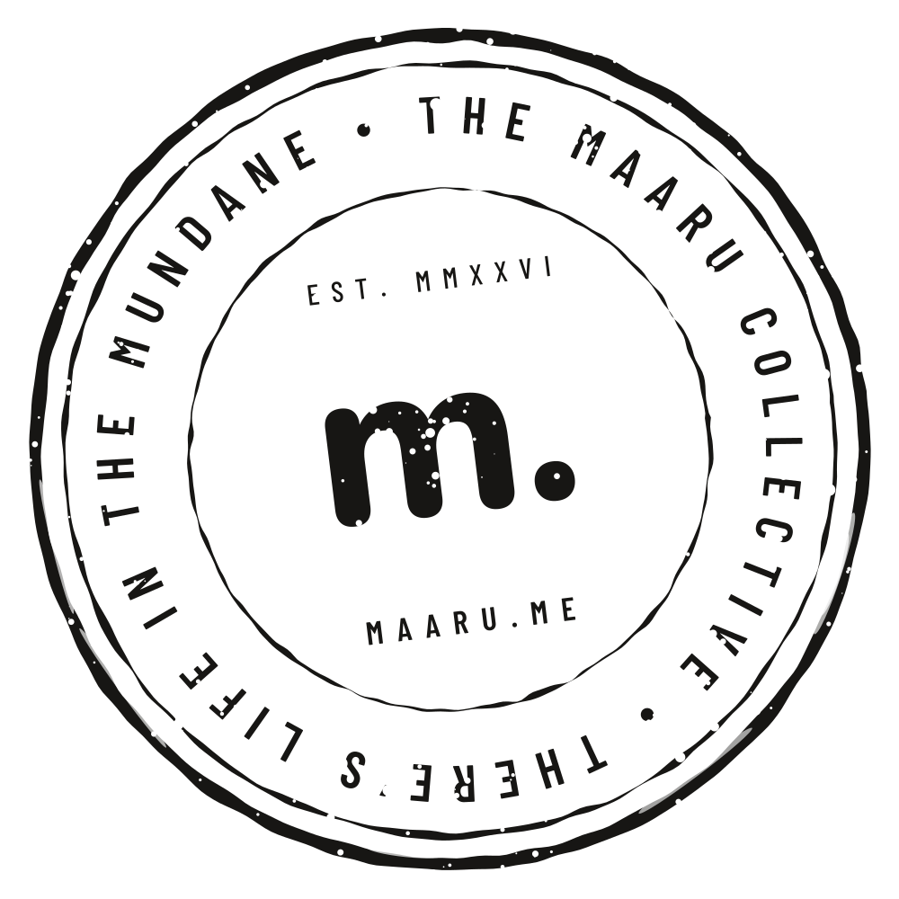
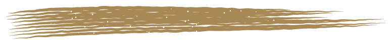
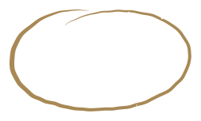
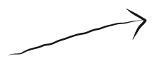

A bold, rounded, lowercase maaru. with an antique-gold full stop. It's a sister to “captured.”: the same family, rounder and heavier. It's the one soft thing in a raw, editorial world, and that contrast is the identity.

Reverse — cream on inkDo
Don’t
Use the stacked lockup for footers and the About page, the horizontal one for wide bars, the m. for favicons and tight spaces, and the stamp for paste-up moments. Tilt the stamp; never tilt the rest.

Stacked
Monogram
StampCream is the ground and ink is the voice. Beige and stone layer between them. Gold is aged ink: a dot, a rule, a mark, a hover. If a screen looks gold, there’s too much of it.
#E9DFD0#171614#C7B49D#A88955#786B5DThe serif speaks, the sans explains, and the condensed type labels things. Play with scale and position, but keep body copy plain and readable.
Cormorant Garamond
500 / 600 + italics. Headlines, statements, pull quotes, big numerals.
The bus stop at 7:40, again.
Nunito Sans
300–700. Body, navigation, captions. Same family as “captured.”
The light hits the shutters on Station Road for about four minutes a day. I’ve started timing my walk around it. Nothing happens, and that’s the point.
Barlow Condensed
500 / 600, uppercase, tracked 0.22em. Dates, numbering, labels, coordinates.
N° 014 — Journal — Note
12.11.26 — 51.5806° N, 0.3420° W
MRU-007 — Side A
Walls, paper and grain sit behind things. Hand-drawn marks point at things. Use both at low volume, and always keep text on a calm surface.

brush-swipe-gold
circle-gold
arrow-inkA few sketches for Claude Code to start from. Each section gets its own format, all using the same tokens.
Elsewhere — 1.2921° S, 36.8219° E — 08.26
Started 09.26 — last touched 3 days ago
Landing-page button — hover or focus it